Scene 1Warm-Up
▶ Start hereHow your Wonder Films lessons work1-minute videoOpen ▾
🎯 TodayI can…
- analyze fossil data to identify specific clues about an ancient organism and its environment.
- explain how scientists move from an observation to a careful, evidence-backed inference.
- write a complete scientific explanation using fossil observations as evidence.
🔎 Mystery specimenWhat can one rock show you?
What to do: Press Inspect specimen. Move the magnifying lens over the rock, then tap 3 things you notice.
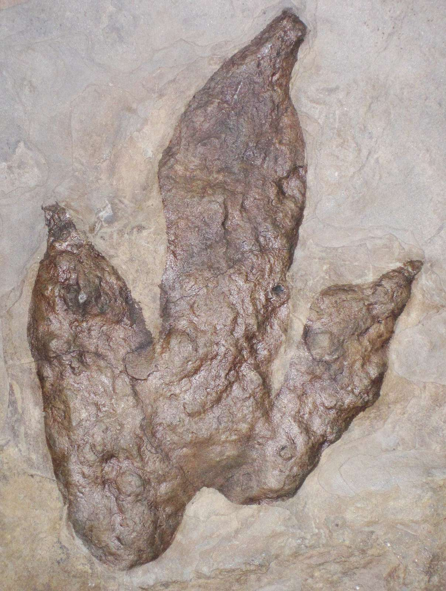
📚 Word WallWords scientists use
What to do: Tap or click each card to flip it and read what the word means.
Scene 2The Lesson
👀 Part 1Observation Comes First
Before a paleontologist explains anything, she looks carefully and writes down exactly what she sees. That is called recording data.
An observation is only what your senses tell you. "The fossil has ridges" is an observation. "It came from a shellfish" is already an inference.
🎞️ Put the scenes in orderHow does a fern become a fossil?
What to do: Drag each photo into the film strip, from first to last. You can also tap a photo, then tap a frame. Get the order right and your strip becomes a movie.
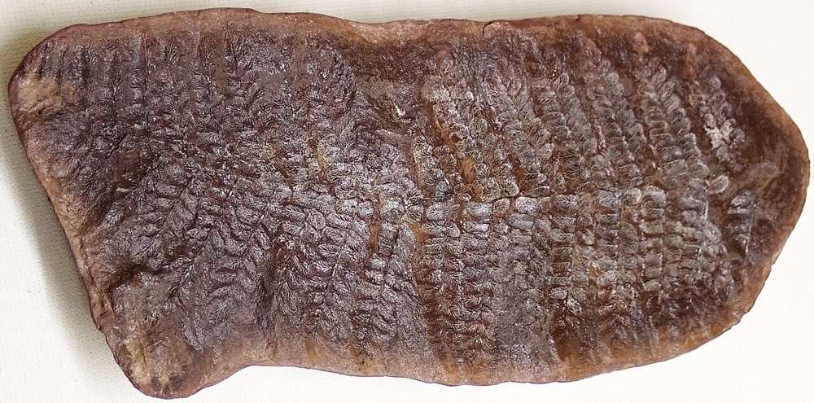
Look at scene 4 again. The dark rock around the fern is…
🐾 Part 2From Data to Inference
Next, scientists analyze the data. They ask: What patterns do I see? What does this remind me of in living things today?
A strong inference names the clue that supports it. "This animal may have eaten plants because its teeth are flat and wide" is strong. "This animal looked weird" is not.
🐾 The Track LabWhere can a footprint last?
What to do: Follow the steps one at a time. You will pick, test, and then explain.
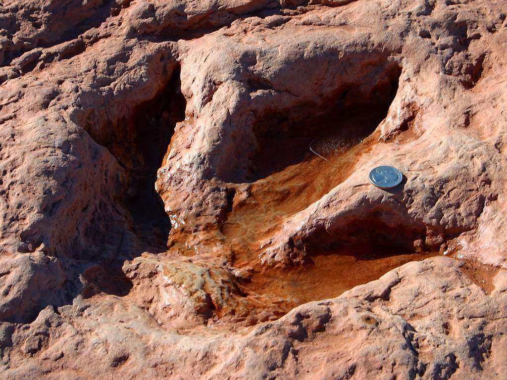
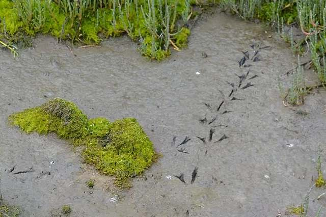
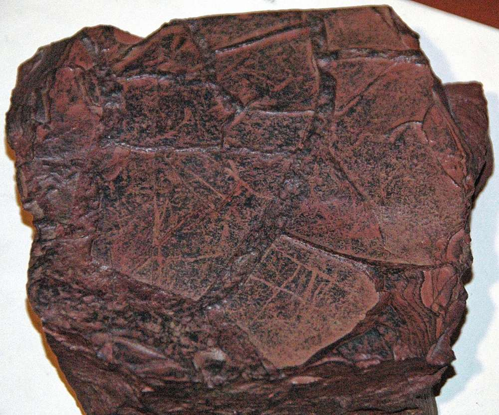
🪨 Part 3The Rock Is Data, Too
For a fossil to form, a living thing must be buried quickly in sediment: sand, mud, or volcanic ash. Over millions of years, the sediment hardens into rock.
The kind of rock is a clue. Dark mudstone often forms in wet, swampy places. Pale limestone can form in calm, shallow water. Gray-green shale forms in quiet water where fine mud settles.
⛏️ The dig wall · Site 7-BDig down through Site 7-B
What to do: First, make a prediction. Then brush the glowing layer: drag across it (or tap it again and again) until the fossil shows.
Can the ROCK around a fossil tell you anything, or only the fossil?
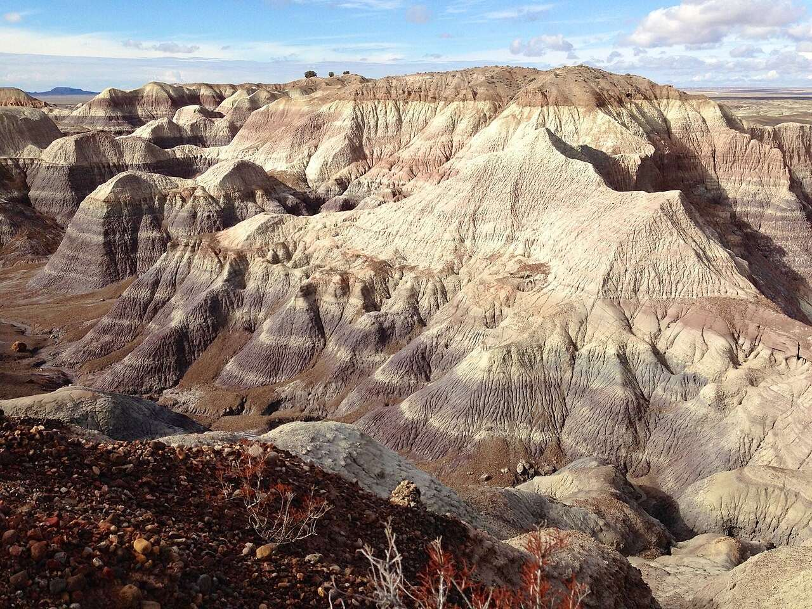
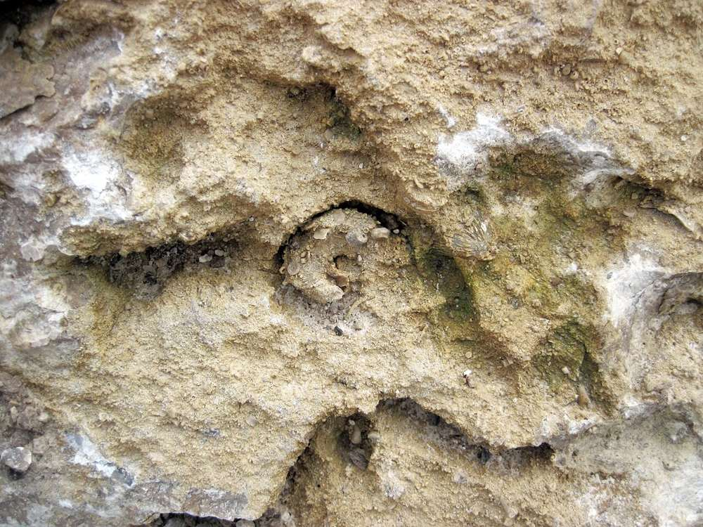
Layer 1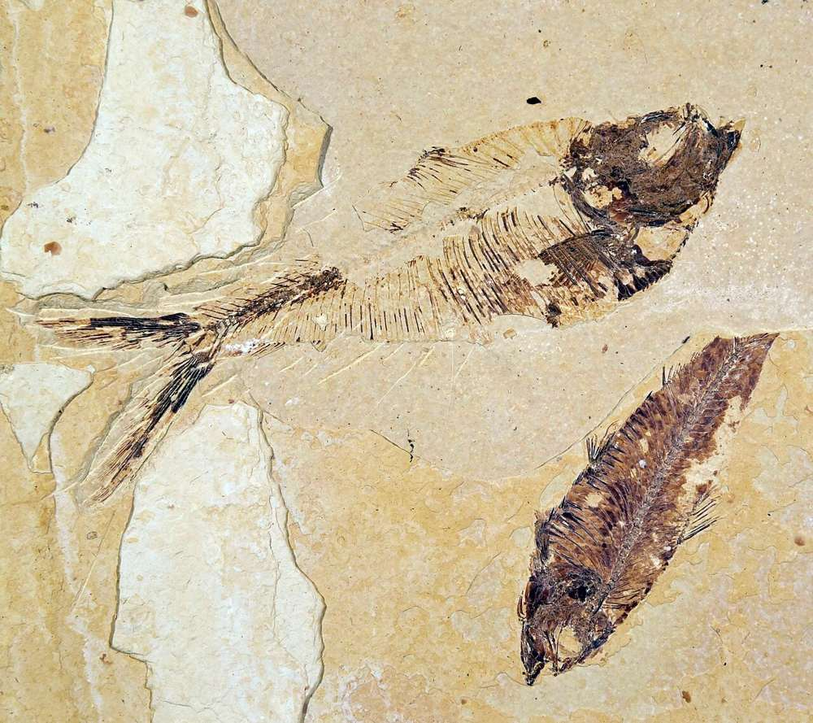
Layer 3At Site 7-B, the place changed over time. In each layer, the fossils AND the rock tell what the place was like then.
The fern (Find 2) and the fish (Find 4) came from the same hillside. Did they live there at the same time?
The oldest fossils on Earth
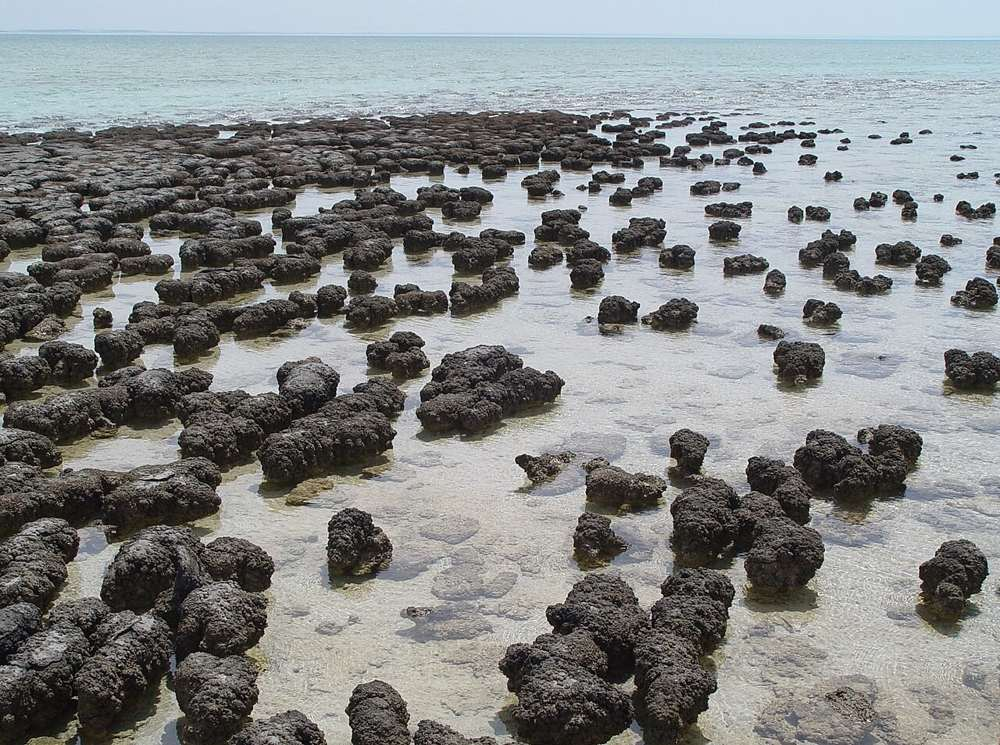
These lumpy mounds are called stromatolites. Tiny living things, too small to see, build them layer by layer in shallow sea water.
Scientists think fossils of mounds like these are among the oldest fossils ever found: about 3.5 billion years old, in rock in Australia. That's long before plants, fish, or dinosaurs.
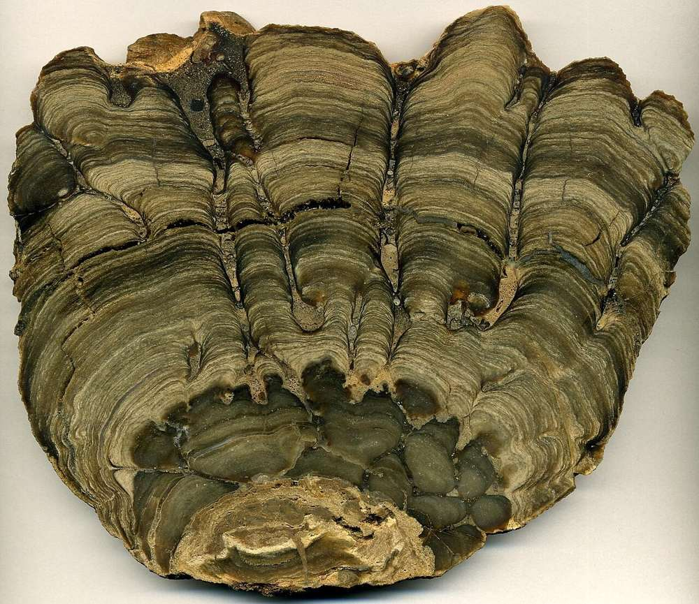
🗂️ Part 4Dr. Reyes's Field Data
What to do: Pick 3 of the 5 finds, one at a time. For each one, tap a clue you see and pick what it was. Then predict where it lived and watch the past appear. Your answers fill the chart.
| Find | What I observe | Possible organism | Possible environment | My evidence |
|---|
🌍 Rebuild the ancient sceneUse your evidence to rebuild Site 7-B OPTIONALOpen ▾
What to do: Pick one you solved. Pick the place it points to, then pick the living things that belong there.
Pick one from your chart and explain it.
Start with: "Find __ may show a…"
Scene 3Self-Check
A student writes: "This fossil looks like it might be a fish." What did they do wrong?
A scientist finds a fossil in dark, fine-grained mudstone. What does the type of sediment add to her investigation?
Which is the strongest, most scientific inference about a tooth fossil?
Scene 4Assignment
🔍 Part AObservation or inference?
What to do: Read each statement. Pick the best answer, or type your answer.
1. "The fossil has ridges that curve from the center toward the outer edge." Is this an observation or an inference?
2. "This organism lived in a shallow ocean because it is a shell fossil." Is this an observation or an inference? Is it strong or weak? What would make it stronger?
3. "The fossil is preserved in dark mudstone with fine grains." Which answer is best?
🚀 Part BShort answer
What to do: Answer in complete sentences. Use your science words.
1. A scientist writes: "This was a predator." Is this a strong or weak scientific inference? Rewrite it as a strong inference using at least two specific observations from Find 5 (a curved tooth with saw-like edges, found 20 cm from a fish skeleton).
2. In the Site 7-B data, Find 2 (the fern fossil) is preserved in dark mudstone. How does that rock type add to what scientists can infer, beyond just the fossil's shape?
✍️ Write and explainWalk through your thinking
What to do: Pick one find from your evidence chart. Go from what you saw to what you concluded. Use at least one of these words: data, analyze, inference, sediment, paleontologist.
Start with: "When I analyzed this find, I recorded…"
Start with: "My inference is that… I know this because the data shows…"
Start with: "My inference could be stronger if I also had…"
🎨 Part CDraw and label
What to do: Draw the three layers of Site 7-B, one on top of the other. Label the rock in each layer. Then write what the top and bottom layers were like long ago.
🎬 Your question from Scene 1Can you answer it now?
What do you still wonder about? Write your question here. Then answer it.
📋 My answersEverything you wrote, in one place
(Your answers show up here as you write.)
How to turn in: Copy your answers and paste them into the Canvas assignment. Or download the file and upload it. Then press Save my drawing in Part C and upload your drawing too.
✅ Checklist
What to do: Tap each item when it is done. Items you finish on the page check themselves.
- My evidence chart has 3 finds and my explanation.
- Part A: all three answers.
- Part B: questions 1 and 2.
- Part C: my drawing and both labels.
- Write and explain, with at least one science word.
🎬 Premiere my Site 7-B storyYour exhibit
What to do: Check your exhibit. Pick the one you wrote about, add your first name, then press Premiere film.
I observed…
I think it was…
My evidence…
It tells us…
🎞️ This film's frames
Print preserved
The Track Lab
The dig
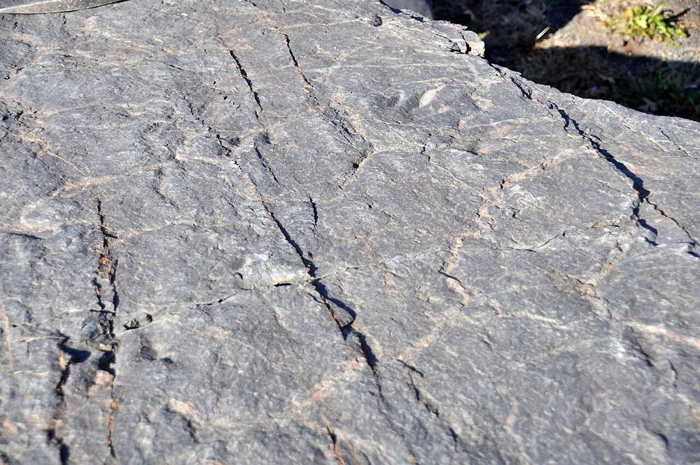
Field data
Earn all four frames in the Lesson, then finish the checklist.
🔜 Coming up next18.01 · How Do Plants Survive in Different Environments?
Next time, a new unit begins. You'll find out how plants survive in very different places.
Photo and music credits
- Rock layers in Petrified Forest NP from the Blue Mesa Trail, Akos Kokai, CC BY 2.0
- Tynsky, Jim- Diplomystus dentatus Fossil (485d880c-424e-4ef0-b0ab-87bd1a6094ba), NPS photo, Public domain
- Grallator (dinosaur footprints) (Cow Branch Formation, Upper Triassic; Solite…, James St. John, CC BY 2.0
- Ammonite in limestone (Mesozoic), James St. John, CC BY 2.0
- Carcharodontosaurus tooth in Vienna, Gyik Toma (Tommy) from Arad, Romania, CC BY 2.0
- Excavating for fossils (24964993233), NPS Natural Resources, Public domain
- FKNMS - Reef (34136062951), National Marine Sanctuaries, Public domain
- Pecopteris sp. (fossil fern) (Mazon Creek Lagerstätte, Francis Creek Shale, M…, James St. John, CC BY 2.0
- Pecopteris sp. (fossil fern) (Mazon Creek Lagerstätte, Francis Creek Shale, M…, James St. John, CC BY 2.0
- Swamp-Ferns-and-Bald-Cypress (26248379563), Homer Edward Price, CC BY 2.0
- Tynsky, Jim- Diplomystus dentatus and Knightia eocaena Fossils (37d33eee-ff7e…, NPS photo, Public domain
- Lambaris, Juan V. Ruiz, CC BY-SA 4.0
- Chesapecten Jeffersonius Outside, Nonenmac at English Wikipedia Later versions were uploaded b, Public domain
- Lake Iamonia gallery003 cypress, Noles1984 (English Wikipedia), Public domain
- Mudcracks in argillite (Snowslip Formation, Mesoproterozoic; Glacier National…, James St. John, CC BY 2.0
- Interbedded shale and limestone (upper Cave Branch Member, Slade Formation, U…, James St. John, CC BY 2.0
- Fossil gastropod in limestone (Columbus Limestone, Middle Devonian; Quarry Tr…, James St. John, CC BY 2.0
- Cackling goose prints in the mud (30047742578), USFWS Alaska, Public domain
- Stromatolites in Sharkbay, Paul Harrison, CC BY-SA 3.0
- Stromatolite Fossil from Wyoming, James St. John, CC BY 2.0
- Big Cypress National Preserve BICY1060, National Park Service Digital Image Archives, Public domain
- Big Cypress National Preserve, Florida (99a1838f-c770-46c6-9b82-927ff0af8f62), NPS staff, Public domain
- Dinosaur track, Jon Sullivan, Public domain
- Bird tracks in the marsh (6555240667), Pacific Southwest Region USFWS from Sacramento, US, Public domain
- Tynsky, Jim- Diplomystus dentatus fossil (9dca89de-5b95-41d6-a032-af7a085e4b0f), NPS photo, Public domain
- Eubrontes (dinosaur track) (East Berlin Formation, Lower Jurassic; Rocky Hill…, James St. John, CC BY 2.0
- Music: Grieg, In the Hall of the Mountain King, Musopen Symphony Orchestra, public domain (Wikimedia Commons).
- Opti the owl: Optima Academy. Sound effects are made by the page. Site 7-B and Dr. Reyes are a practice dataset; every fossil photo is real.